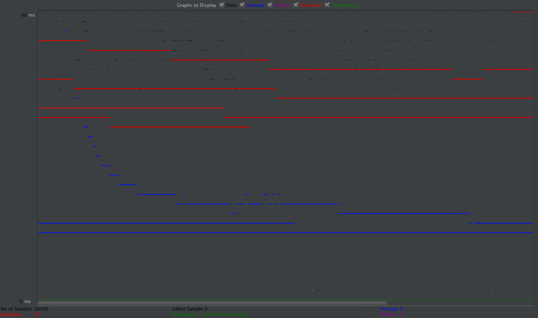
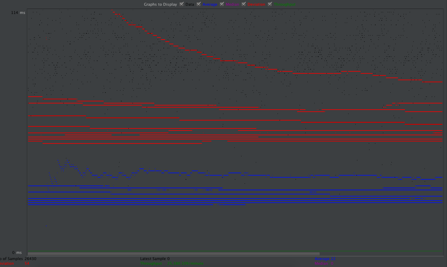
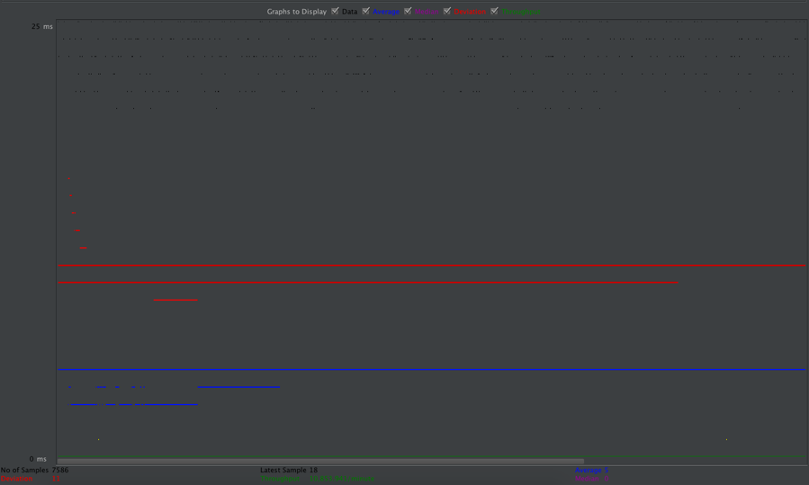
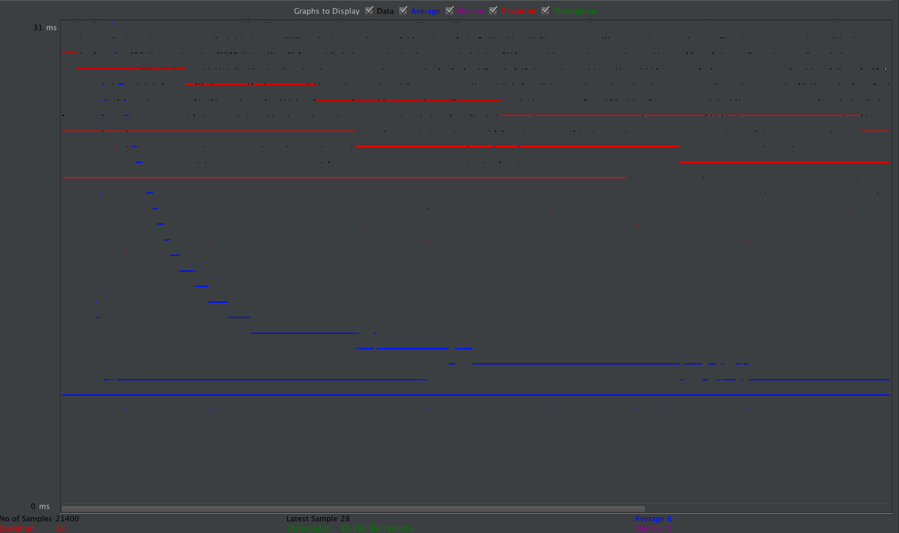
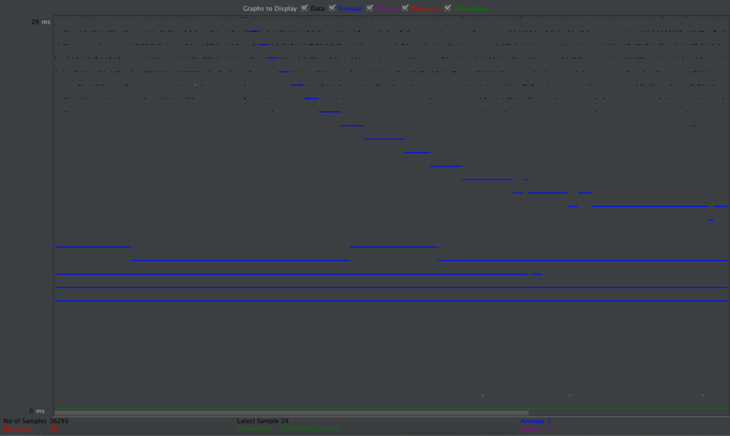
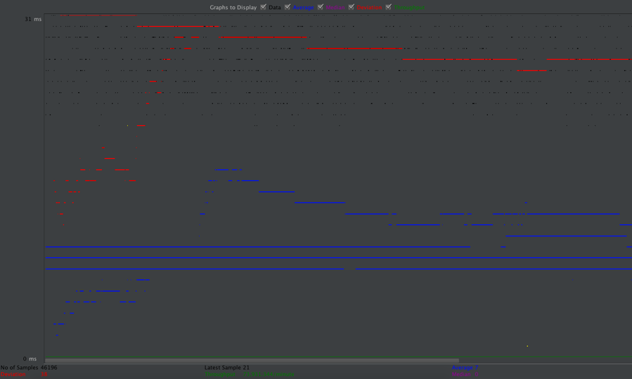
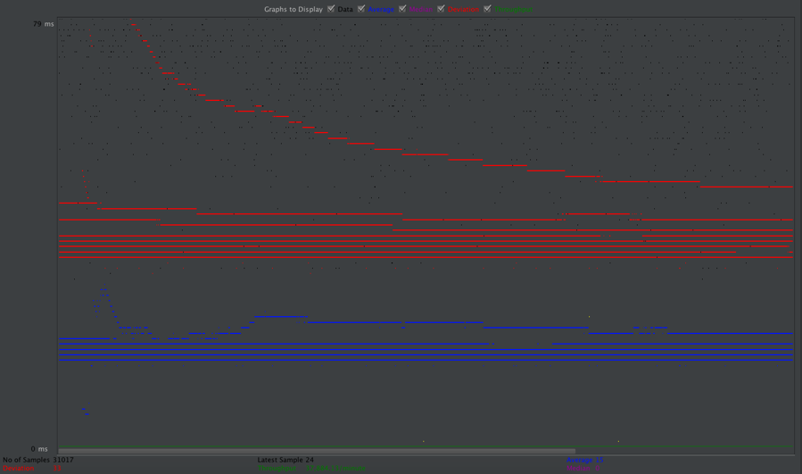
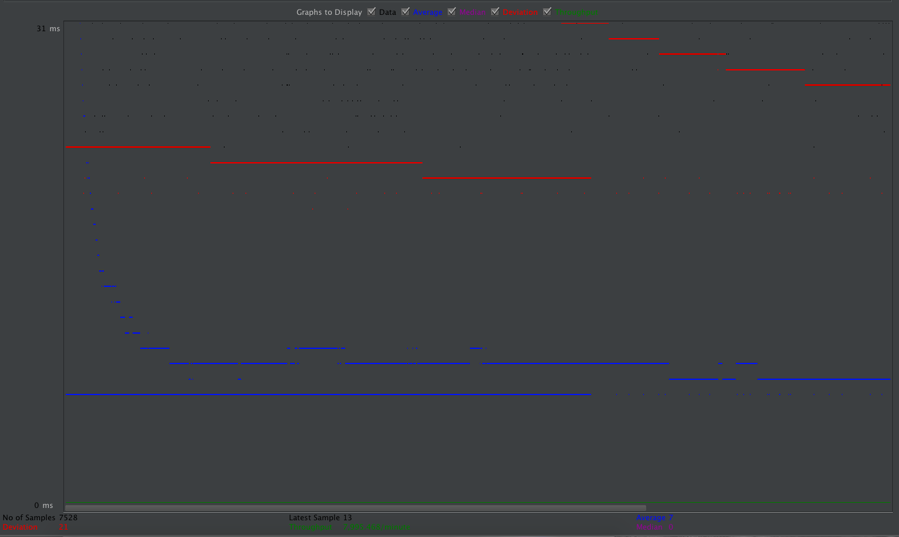
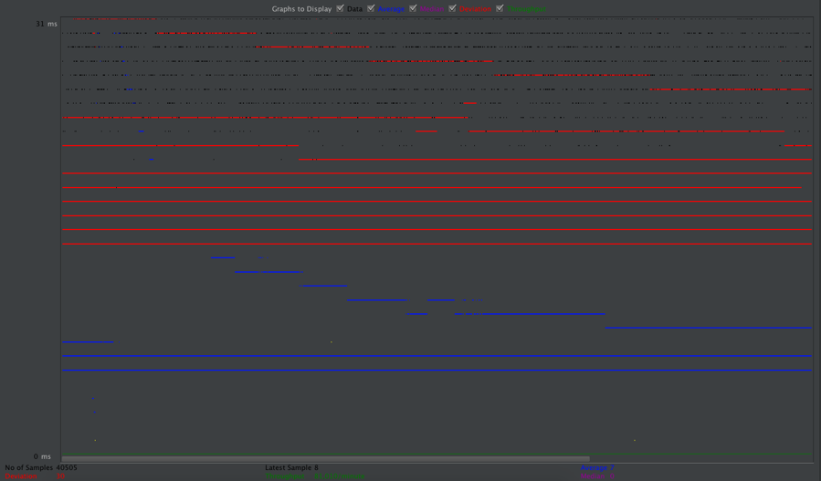

| Single-instance version cases | Graph Results Screenshot | Average Query Time(ms/From Jmeter) | Average Search Servlet Time(ns) | Average JDBC Time(ns) | Analysis |
| Case 1: HTTP/10 threads without preparedStatement |  | 6 | 1489921.53942 | 1406460.65845 | 10 threads without preparedStatement |
| Case 2: HTTP/10 threads without connection pooling |  | 22 | 66200321.4715 | 10094569.6021 | 10 threads without pooling, basically cost more than case1 with pooling. Since pooling utilize connections in a more efficient way |
| Case 3: HTTP/1 threads |  | 5 | 643274.975794 | 579360.128089 | single thread didn't cost much |
| Case 4: HTTP/10 threads |  | 6 | 2002991.01802 | 1893446.9094 | 10 threads cost more than case 3 for single thread |
| Case 5: HTTPS/10 threads |  | 7 | 1955676.87972 | 1858233.89724 | basically the same with http test |
| Scaled version cases | Graph Results Screenshot | Average Query Time(ms/From Jmeter) | Average Search Servlet Time(ns) | Average JDBC Time(ns) | Analysis |
| Case 1: HTTP/10 threads/No connection pooling |  | 15 | 43337452.69 | 5984171.71 | 10 threads without pooling, cost is really high |
| Case 2: HTTP/10 threads/No prepared statements |  | 7 | 1209950.591 | 1109379.154 | 10 threads without prepared statement,but better with pooling |
| Case 3: HTTP/1 thread |  | 7 | 1175813.981 | 1028321.477 | single thread case |
| Case 4: HTTP/10 threads |  | 7 | 1318209.603 | 1183246.089 | with master and slave nodes, just slightly worse compared with single thread case |